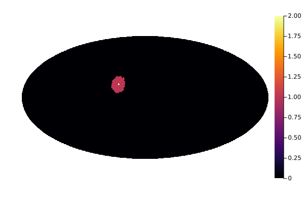

Query functions
It is often useful to perform calculations on a set of adjacent pixels in a map. Asking for the indices of pixels within a given region of the sphere is called a query, and this kind of function can be implemented efficiently using the Healpix scheme.
The functions that query a set of pixels satisfying some proximity criteria are the following:
Let's show an example about how to use queryDiscRing, which returns a list of the indexes of the pixels that fall within some angle from a direction on the sky sphere:
resol = Resolution(32)
(theta, phi) = (1.3, 0.7)
radius = deg2rad(10.0)
pixidx = queryDiscRing(resol, theta, phi, radius)92-element Vector{Int64}:
3534
3535
3536
3661
3662
3663
3664
3665
3788
3789
⋮
5199
5200
5201
5325
5326
5327
5328
5455
5456We can visualize where these pixels are using a Mollweide projection:
m = HealpixMap{Float32, RingOrder}(resol.nside);
m[pixidx] .= 1;
m[ang2pix(m, theta, phi)] = 2 # Highlight the pixel at the center
using Plots
plot(m)
The function queryDiscRing accepts an optional keyword fact that specifies the resolution to be used in computing the result; it can be any positive integer, and the actual resolution is fact * NSIDE.
Reference
Healpix.queryDiscRing — FunctionqueryDiscRing(resol::Resolution, theta, phi, radius; fact=0)Return a list of the indices of those pixels whose centers are closer than radius to direction (theta, phi). The three angles radius, theta, and phi must be expressed in radians.
If fact is nonzero, it must be a positive integer; it requires to carry the computation at a resolution fact * nside.
Healpix.queryStripRing — FunctionqueryStripRing(resol::Resolution, theta1, theta2; inclusive=true)Return a range of the indices of pixels that overlap with the colatitude range [theta1, theta2]. If inclusive is set to false, only those pixels whose centers lie within the colatitude range are returned.
This function assumes the RING scheme, because in this case, the indexes of the pixels cover a range without gaps. Therefore, the function returns a range instead of a list, as it is quicker and occupies far less memory.